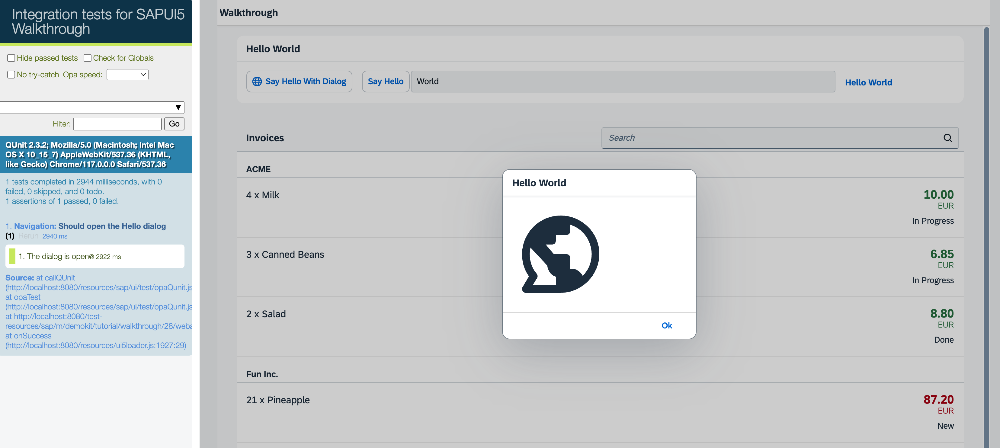
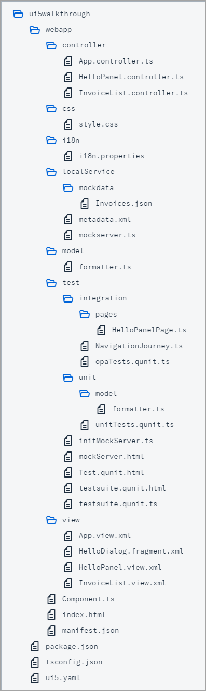

We haven't thought about testing our interaction with the app yet, so in this step we will check if the dialog actually opens when we click the "Say Hello with Dialog" button. We can easily do this with OPA5, a feature of OpenUI5 that is easy to set up and is based on JavaScript and QUnit. Using integration and unit tests and running them consistently in a continuous integration (CI) environment, we can make sure that we don't accidentally break our app or introduce logical errors in existing code.
In this tutorial, we focus on a simple use case for the test implementation. If you want to learn more about OPA tests, have a look at our Testing Tutorial tutorial, especially Step 6: A First OPA Test.

You can view all files at OpenUI5 TypeScript Walkthrough - Step 28: Integration Test with OPA and download the solution as a zip file.

We add a new folder integration below the test folder, where we put our new test cases. Page objects that help
structuring such integration tests are put in the pages subfolder that we also create now.
We create a new HelloPanelPage.ts file under webapp/test/integration/pages where the OPA test for the
main page is implemented. We define here the OPA test for our HelloPanel view.
A "page object" is a structuring element of OPA that encapsulates actions and assertions needed to describe the journey, which we'll
come to in the next step. Typically, these are related to a view in the app, but there can also be stand-alone pages for browsers or
common functionality. This page object relates to the HelloPanel view.
The implementation of the page object holds the helper functions we will need in our journey. We import the
sap.ui.test.OPA5 library and define a page object out of it.
In the actions section of the page object we define a function to click the "Hello" dialog button. This is done in OPA5 with a
waitFor statement, it is basically a loop that checks for the conditions defined as parameters. If the conditions
are met, the success callback is executed; if the test fails because the conditions have not been met, the text in the
errorMessage property is displayed on the result page.
In the assertions section we define a waitFor statement that checks if a sap.m.Dialog control is
existing in the DOM of the app. When the dialog has been found, the test is successful and we can immediately confirm by calling an
ok statement with a meaningful message.
import Opa5 from "sap/ui/test/Opa5";
import Press from "sap/ui/test/actions/Press";
const viewName = "ui5.walkthrough.view.HelloPanel";
export default class HelloPanelPage extends Opa5 {
// Actions
iPressTheSayHelloWithDialogButton() {
return this.waitFor({
id: "helloDialogButton",
viewName,
actions: new Press(),
errorMessage: "Did not find the 'Say Hello With Dialog' button on the HelloPanel view"
});
}
// Assertions
iShouldSeeTheHelloDialog() {
return this.waitFor({
controlType: "sap.m.Dialog",
success: function () {
// we set the view busy, so we need to query the parent of the app
Opa5.assert.ok(true, "The dialog is open");
},
errorMessage: "Did not find the dialog control"
});
}
};We create a new NavigationJourney.ts file under webapp/test/integration/.
A journey is another structuring element of OPA. It consists of a series of integration tests that belong to the same
context, such as navigating through the app. Similar to the QUnit test implementation, OPA5 uses QUnit; that's why we first set up a
QUnit module Navigation that will be displayed on our result page.
The function opaTest is the main aspect for defining integration tests with OPA. Its parameters define a test name
and a callback function that gets executed with the following OPA5 helper objects to write meaningful tests that read like a user
story.
Given
On the given object we can call arrangement functions like iStartMyUIComponent to load our app component
for integration testing.
When
Contains custom actions that we can execute to get the application in a state where we can test the expected behavior.
Then
Contains custom assertions that check a specific constellation in the application and the teardown function that removes our component again.
In our journey, we create a very simple test that starts the MainPage and loads our app. Then, we carry out the actions we
defined in our MainPage and expect that they will be executed successfully. Finally, we shut down the page again by
calling the function iTeardownMyApp on the MainPage.
import opaTest from "sap/ui/test/opaQunit";
import HelloPanelPage from "./pages/HelloPanelPage";
const onTheHelloPanelPage = new HelloPanelPage();
QUnit.module("Navigation");
opaTest("Should open the Hello dialog", function () {
// Arrangements
onTheHelloPanelPage.iStartMyUIComponent({
componentConfig: {
name: "ui5.walkthrough"
}
});
// Actions
onTheHelloPanelPage.iPressTheSayHelloWithDialogButton();
// Assertions
onTheHelloPanelPage.iShouldSeeTheHelloDialog();
// Cleanup
onTheHelloPanelPage.iTeardownMyApp();
});As you can see, the test case reads like a user story; we actually do not need the implementation of the methods yet to understand the meaning of the test case. This approach is called "Behavior Driven Development" or simply BDD and is popular in "Agile Software Development".
We create a new opaTests.qunit.ts file under
webapp/test/integration/. This module imports our
NavigationJourney and is the entrypoint for all integration
tests in the project.
import "./NavigationJourney";Finally we reference the new integration/opaTests.qunit.ts in
the testsuite.qunit.ts file. The .qunit.ts
extension is omitted and will be added automatically during runtime.
export default {
// ...
tests: {
"unit/unitTests": {
title: "UI5 TypeScript Walkthrough - Unit Tests"
},
"integration/opaTests": {
title: "UI5 TypeScript Walkthrough - Integration Tests"
}
}
};If we now open the webapp/test/testsuite.qunit.html file in the
browser and select integration/opaTests, the QUnit layout
should appear and a test "Should see the Hello dialog" will run immediately. This
action will load the app component on the right side of the page. There you can see
the operations the test is performing on the app. If everything works correctly, a
button click will be triggered, then a dialog will be displayed and the test case
will be green.
OPA tests are located in the webapp/test/integration folder
of the application.
Use page objects and journeys for
structuring OPA tests.